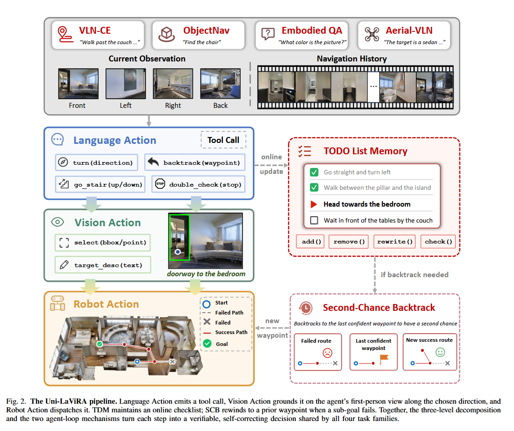
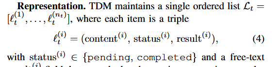
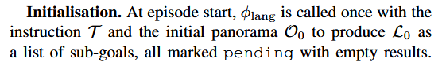
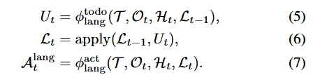

Source: Zotero note; match: first-page title.Open item in Zotero
Comment: Project page: https://xetroubadour.github.io/Uni-LaViRA/
SCB - Second Chance Backtrack
TDM - TODO Memory List

Uni-LaViRA Architecture
1) Language Action
2) Vision Action
3) Robot Action
TODO List Memory
sliding window of recent observations
1.Representations:

2.Initializaion:

3.Update:

Update, Rewrite, AddPROMPT ONLY
SCB
a. backtrack as an explicit action
b. the second-chance re-decision